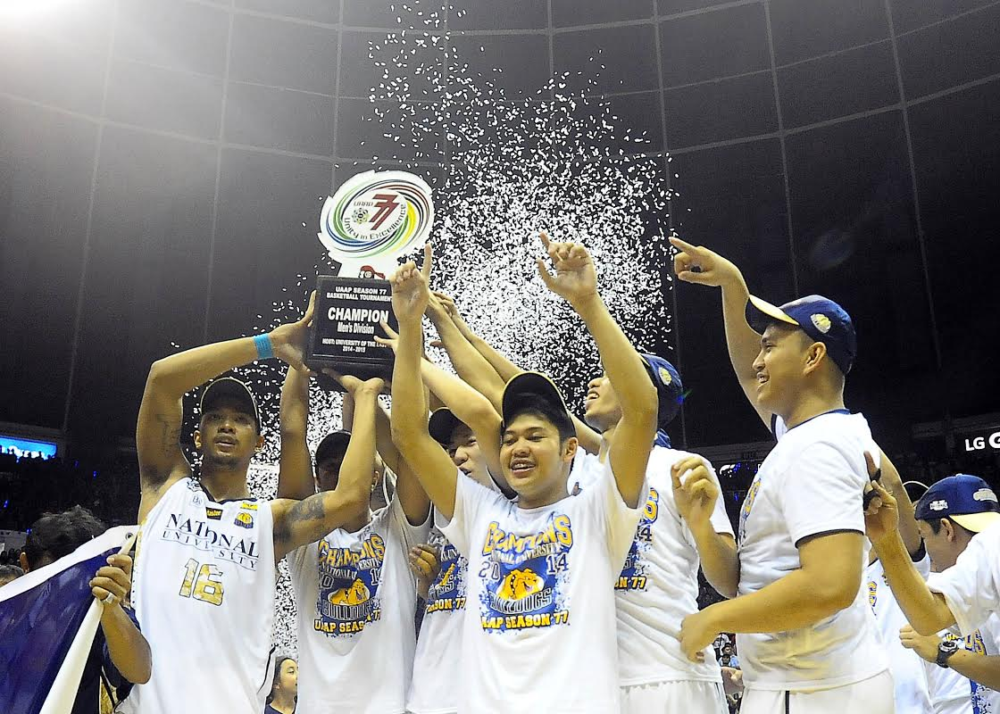

Headlining this list of champions is the NU Men’s Basketball team that ended a 60-year title drought, after beating Far Eastern University in Game 3 of their Finals series last October 15, 2014.
In order to celebrate this momentous achievement, the entire NU community held a huge party at the activity center inside the NU campus in Sampaloc, Manila last Thursday, October 23, 2014.
The Women’s basketball team of NU also made history by capturing their first ever championship via a perfect 16-0 sweep of the season.
Edwin Tolentino, Joseph Tipay and Ben Inaudito of the NU Men’s Beach Volleyball team were also honored for winning their third straight championship.
Other champions include the Men’s Badminton team, Girls Volleyball and the back-to-back UAAP Cheerdance Competition winners, NU Pep Squad.
To add spice to the celebration, former Pinoy Big Brother Housemates, Jacob Benedicto, Jayme Jalandoni, Axel Torres and Loisa Andalio made special appearances.
Completing the special night was the surprise performance of Sponge Cola who rocked the NU campus like never before.